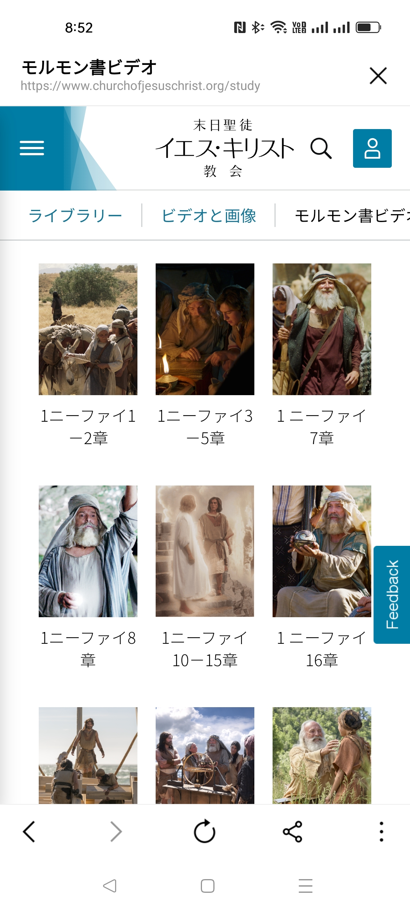

「わたしは兄弟たちに言った。モルモン書はこの世で最も正確な書物であり，
わたしたちの宗教のかなめ石である。そして，人はその教えを守ることにより，
ほかのどの書物にも増して神に近づくことができる。
（モルモン書の序文，6段落）」
2023年 4月12日(水曜日)～7月12日(水曜日)まで 毎週水曜日 20:00～21:30
５月４日は、Zoomレッスンはなし
今週は、生徒用テキストを読んだ感想を、オンラインでのディスカッションとして、Lineグループで分かちあっていただければと思います。１行２行の短いメッセージでOKです。
●第7課 「強さを授けるイエス・キリストの力」と
https://www.churchofjesuschrist.org/study/manual/teachings-and-doctrine-of-the-book-of-mormon-class-prep-material-2021/unit-2/lesson-7-class-preparation-material?lang=jpn
●第8課 「死後の世界」
https://www.churchofjesuschrist.org/study/manual/teachings-and-doctrine-of-the-book-of-mormon-class-prep-material-2021/unit-2/lesson-8-class-preparation-material?lang=jpn
| 日付 | 単元 | 課 | 読書課題 |
| 2023年5月3日 第4週 /14 |
神の言葉の力 | 第7課 強さを授けるイエス・キリストの力 | ●「強さを授けるイエス・キリストの力」 |
| 第8課 死後の世界 | ●「死後の世界」 | ||
| 欠席の場合の補習課題 | 読書課題から印象に残った箇所を説明する文章を送信してください。 |
=========== (第7課 2) 「イエス・キリストの贖いによる，喜びの3つの真珠」 2012年1月号
https://jp.churchofjesuschrist.org/2012-jan-04?lang=jpn
=========== (第7課 3) 「容易に重荷に耐えられるように」 2014年4月
デビッド・A・ベドナー長老
贖罪が持つ，人を強める力
「イエス・キリストの贖罪は，アダムの堕落の影響に打ち勝ち，人間が犯す一つ一つの罪の赦しを可能にします。しかしそれだけではなく，主の贖罪はまた，人が善い行いをすることを可能にし，死すべき人間の限界を超えてより善い者となることを可能にします。ほとんどの教会員が知っているように，間違いを犯したときや，罪の影響力に打ち勝つ助けが必要なときに，贖いの力によって清めていただくことができます。しかし，贖罪が，忠実で，従順で，ふさわしく，誠実な人，そして善い人になろう，忠実に仕えようと努力している人のためにもあることを，わたしたちは理解しているでしょうか。わたしたちは贖罪に人を強める側面があることを十分に認識していないのではないかと懸念しています。根性や意志の力，自制心，明らかに限界のある自分の能力によって，積荷を独りで負わなければならないと思い違いをしてはいないでしょうか。
イエス・キリストが地上に来て人のために死んでくださったという知識は大切です。しかし同時に，主は贖罪を通して，そして聖霊の力によって，わたしたちを活気づけたい，単に導くだけでなく強め癒したいと望んでおられるということも知る必要があります。」
=========== (第7課 4) 「イエス・キリストの贖罪により強められる」 2015年10月
ダリン・H・オークス長老
https://www.churchofjesuschrist.org/study/general-conference/2015/10/strengthened-by-the-atonement-of-jesus-christ?lang=jpn
「わたしはこれらのことが真実であると知っています。救い主の贖罪には，確かに，万人の復活による不死不滅を保証し，悔い改めとバプテスマにより罪から清められる機会を与える以上の力があります。主の贖罪は，さらに，死すべき状態の重荷を負う強さを与えるために，死すべき状態の人間の弱さを全て経験された御方に助けを請う機会をも提供してくれるのです。主はわたしたちの苦痛を御存じで，わたしたちのためにおられます。良いサマリヤ人のように，主はわたしたちが傷ついているのを見つけると，傷に包帯をして，介抱してくださるでしょう（ルカ10：34 参照）。人を癒やし強めるイエス・キリストとその贖罪の力は，それを求めるわたしたち全員のためにあるのです。そのことを証するとともに，その全てを可能にしてくださった救い主について証します。」
=== 付録 1

=== (end)
Zoom予備チャンネル Stk
https://zoom.us/j/92950726624?pwd=Q0FoMHFlMTIrRStVbFhNT3c2bmRlZz09
Zoom ID：929 5072 6624
パスコード：institute